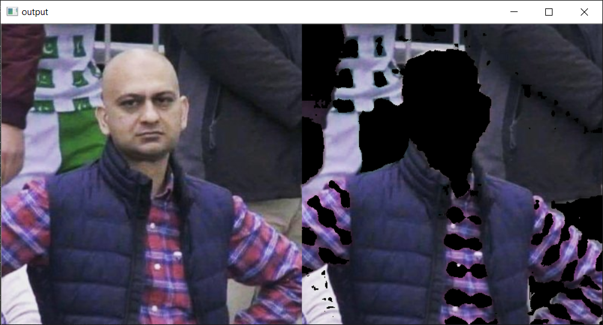

Pseudo OpenCV
state-of-the-art paramter tuning
"Ha, skin-detection isn't even that hard", you laughed.
*10 bloody hours later*
Yes, OpenCV can be easy, but choosing the right parameters is hard. While I'm sure there's tons of tutorials and documentations out there, you're on your own when it comes to tuning parameters (Fuck HSV, that's not how colors works).
So, here's a list of online utilities to visualize the most common functions. The site is written in OpenCV.js with real-time visualization, presented in a human-readable manner for you to try out parameters without having to write a line of code.
Utilities
- Canny Edge Detector
- Image Thresholding
- Gaussian Blur
- HSV Color Mask
- Adaptive Image Thresholding
- Median Blur
*Disclaimer*: This site is not in any way associated with the OpenCV organization. Visit OpenCV.org for an updated documentation for the latest functions.
This site is built on the sheer annoyance and repetitive frustration the author experienced while tuning parameters on OpenCV. It is casually maintained in my spare time. You can DM me on Github for any feature suggestions.